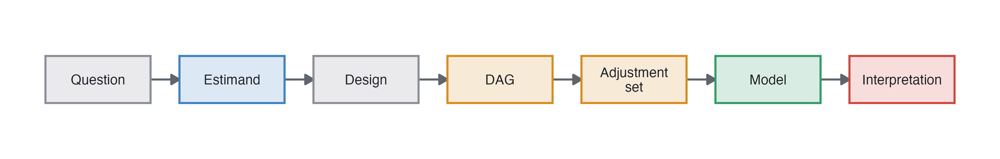
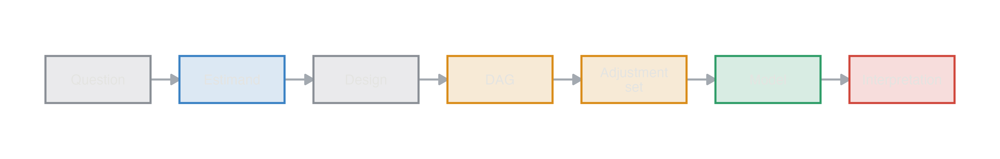
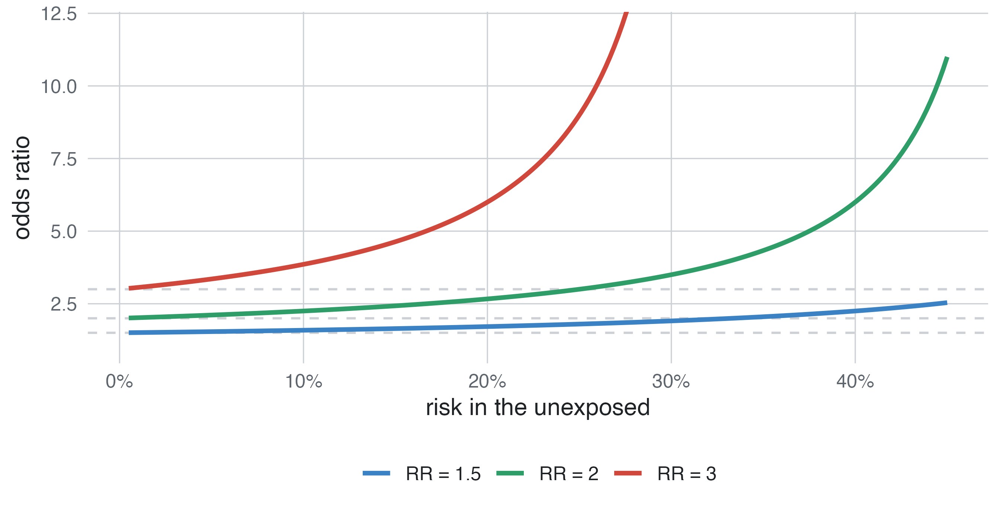
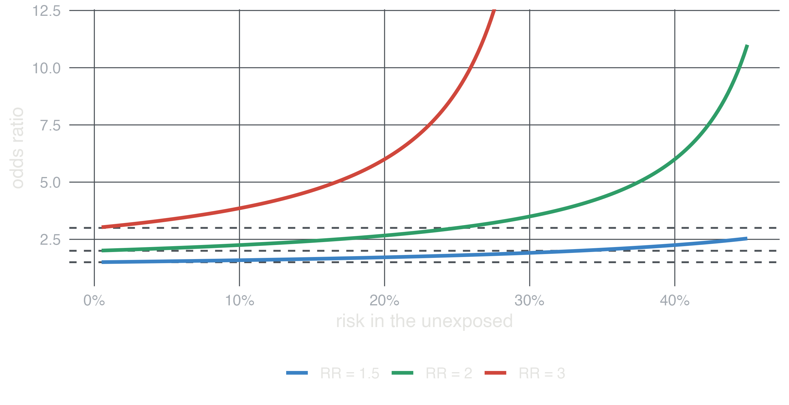

Epidemiology guide, part 1
Every analysis in this guide goes through the same steps. A question (“does smoking cause coronary heart disease, and by how much?”) becomes an estimand: a precise quantity, such as the risk ratio of a 10-year coronary event for smokers against non-smokers with the same age and sex. A design gathers data that can estimate it. A causal diagram says which variables to adjust for. A model turns the data into a number, and the number is interpreted on the scale of the estimand. This page covers the last two steps: the measures epidemiology uses and how the coefficients of its models are read. The next pages cover the designs, the diagrams and mediation (Lash et al. 2021; Hernán and Robins 2020).


| measure | definition | example | typical design |
|---|---|---|---|
| Prevalence | proportion of a population that has the condition at a time | 18% of adults have hypertension | cross-sectional |
| Risk (cumulative incidence) | proportion of people free of the outcome at the start who develop it over a period | 8% have a coronary event in 10 years | cohort, trial |
| Rate (incidence density) | new cases per unit of person-time | 2.5 breast cancers per 1000 woman-years | cohort |
| Odds | probability / (1 − probability) | a risk of 0.2 is odds of 0.25 | case-control (only odds ratios) |
| Hazard | instantaneous rate among those still at risk at a given time | cohort with times (Cox) |
Prevalence mixes how often a condition starts and how long it lasts: in a steady population, prevalence ≈ incidence rate × mean duration. A treatment that keeps patients alive longer raises prevalence. A risk always refers to a period (“10-year risk”), and it requires everyone to be followed for that period or a method that handles censoring (Kaplan-Meier). When another event can prevent the outcome (death from other causes before a cancer relapse), the risk of the outcome is a cumulative incidence in the presence of a competing event. One minus Kaplan-Meier, which censors the competing deaths, overstates it.
| measure | definition | estimated by |
|---|---|---|
| Risk difference (RD) | risk1 − risk0 | cohort, trial (2×2 table, binomial model with identity link) |
| Number needed to treat (NNT) | 1 / |RD| | trial |
| Risk ratio (RR) | risk1 / risk0 | cohort, trial, cross-sectional (prevalence ratio) |
| Rate ratio (IRR) | rate1 / rate0 | cohort (Poisson regression with log person-time as offset) |
| Hazard ratio (HR) | hazard1 / hazard0, assumed constant over time | cohort, trial (Cox regression) |
| Odds ratio (OR) | odds1 / odds0 | any design; the only one a case-control study gives |
| Mean difference | mean1 − mean0 | linear regression |
| Ratio of geometric means | exp(mean of log1 − mean of log0) | linear regression of a log outcome |
Difference measures say how many people are affected, and that is what decisions need. Ratio measures say how strong the association is, and they are usually more stable across populations with different baseline risks. Report both when you can: a risk ratio of 2 means 10 extra cases per 1000 people if the baseline risk is 1%, and 200 if it is 20%.
The odds ratio approaches the risk ratio only when the outcome is rare (Figure 2). A case-control study of a rare disease therefore estimates the risk (or rate) ratio. A cross-sectional study of a common condition analysed with logistic regression reports odds ratios that look much stronger than the prevalence ratios.


The odds ratio and the hazard ratio have a property that surprises many people. Suppose a treatment multiplies the odds by 3 in every subgroup of patients and the subgroups are perfectly balanced between the arms, so nothing is confounded. The odds ratio of the whole trial is still smaller than 3 (Greenland et al. 1999). Risk differences and risk ratios do not behave this way.
| risk, control | risk, treated | OR | RR | RD | |
|---|---|---|---|---|---|
| low risk | 0.10 | 0.250 | 3.00 | 2.50 | 0.150 |
| high risk | 0.60 | 0.818 | 3.00 | 1.36 | 0.218 |
| whole population (half each) | 0.35 | 0.534 | 2.13 | 1.53 | 0.184 |
Both subgroups have an odds ratio of 3, and the whole population has 2.13. Neither number is wrong: they answer different questions. The conditional odds ratio is the effect for a patient with given characteristics; the marginal one is the effect on the population. In a trial the crude analysis estimates the marginal effect and an analysis adjusted for prognostic variables the conditional one, which is further from 1. studysim generates data with conditional effects, and its answer key shows both for trials (absolute effects in the trial).
| Value | |
|---|---|
| Risk: placebo | 0.1700 |
| Risk: indomethacin | 0.0896 |
| Risk difference, indomethacin vs placebo | -0.0806 |
| Number needed to treat for one event fewer, indomethacin vs placebo | 12.4000 |
| Risk ratio, indomethacin vs placebo | 0.5260 |
| Odds ratio, marginal (population), indomethacin vs placebo | 0.4800 |
| Odds ratio, conditional (true model), indomethacin vs placebo | 0.4700 |
| outcome | model | exp(β) or β is | jamovi |
|---|---|---|---|
| continuous | linear regression | β: difference in the mean per unit of x | Regression ▸ Linear Regression |
| continuous, skewed | linear regression of log(y) | exp(β): ratio of geometric means | Compute log(y), then linear regression |
| binary | logistic regression | odds ratio | Regression ▸ Logistic Regression ▸ 2 Outcomes |
| binary, matched sets | conditional logistic regression | odds ratio within sets | condLogReg |
| count or rate | Poisson (negative binomial) regression, log person-time as offset | rate ratio | GAMLj |
| time to event | Cox regression | hazard ratio | prognosis |
The same rules apply to every model:
center: solves in its own scenarios.Effect modification means the effect of X differs between groups of Z: the risk ratio of BMI for breast cancer is below 1 before menopause and above 1 after it. Whether it appears depends on the scale: effects that are constant on the ratio scale differ on the difference scale whenever baseline risks differ, and vice versa. Report the effect within each level of the modifier, on both scales if possible. A modifier is not something to adjust away: it is a result. A causal diagram shows which variables cause which, not how their effects combine, so it cannot show effect modification.
| column | estimand |
|---|---|
| Direct (conditional) | the effect in the generating model, every other variable fixed |
| Total | the effect of changing the variable while its consequences change too, given the variables it does not cause (Causal diagrams) |
| Crude | the association without adjustment |
| Adjusted (all) | the conditional association given every measured variable |
| Adjusted (DAG) | the association given the measured variables that the diagram says to adjust for |
| Absolute effects (trials) | risks per arm, RD, NNT, marginal and conditional OR or HR |